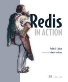
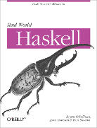

huangz/homepage¶
黄健宏（huangz）， 男， 1990 年出生， 现居广东清远。
著有《Redis设计与实现》， 译有《Redis实战》、《Redis命令参考》、《Disque使用教程》等。
联系方式： 微博 、 twitter 、 豆瓣 、 huangz1990@gmail.com
著作¶
project R.M. —— 进行中，预计 2016 年上半年完成。
《Redis 设计与实现》新版 —— 现正发售中。

翻译¶
《PostgreSQL 数据库文档》 —— PostgreSQL 官方手册的中文翻译版。
《Redis 实战》（《Redis in Action》中文版） —— 现正发售中。
《Redis 命令参考》 —— Redis 官方文档的中文翻译版。
《Clojure API 文档》 （多人协作项目）
《Real World Haskell》中文版 （多人协作项目）

课程¶
- 《Redis 从入门到精通》
- 《Redis 多机特性工作原理简介：关于复制、Sentinel 和集群》 —— 在线观看 、 下载视频 、 下载演示稿。
更多¶
- 博客： blog.huangz.me
- 笔记： note.huangz.me
- github： github.com/huangz1990
© 2015, huangz